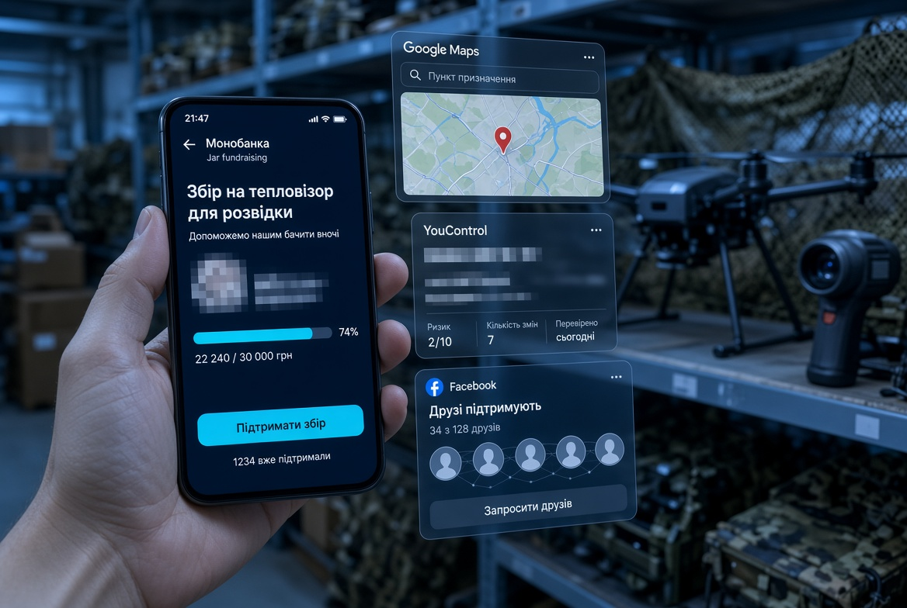
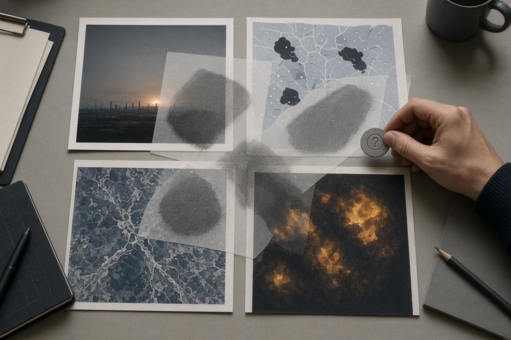
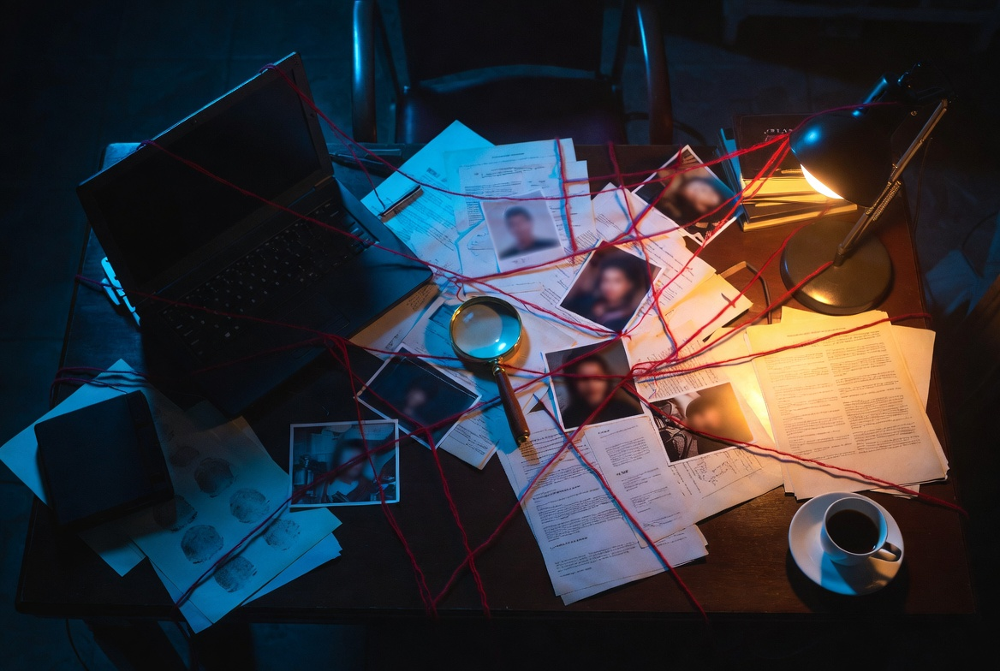

OSINT з нуля.
Один сигнал. П'ять перевірок. Жодних здогадок.
За 15 хвилин ви зрозумієте, як перейти від першої зачіпки до перевіреного висновку — і з чого почати власну практику вже сьогодні.
OSINT — це не «знайти людину за п'ять хвилин». Це дисципліна, у якій важливіше правильно поставити питання, перевірити джерело і вчасно зупинитися, ніж відкрити ще один сервіс.
Сервіси змінюються, закриваються і помиляються.
Кожен крок має джерело, контекст і межу достовірності.
Іноді все починається з одного слабкого сигналу
Не з готової відповіді. З деталі, яку ще потрібно перевірити, зіставити й правильно обмежити.

ПУБЛІЧНИЙ ЗБІРВід сторінки збору — до карти зв'язківПеревірити організатора, контекст і незалежні підтвердження.02 ↗ ЦИФРОВИЙ IDВід технічного анкера — до гіпотези про особуID стабільний, але сам по собі ніколи не підтверджує особу.03 ↗П'ять кроків, на яких тримається будь-яке дослідження
Починайте не з інструмента, а з питання. Тоді сервіс стає засобом, а не маршрутом.
Що саме треба встановити? Який результат буде достатнім?
Які відкриті джерела можуть містити потрібний сигнал?
Хто створив дані, коли, навіщо і чи можна їм довіряти?
Чи підтверджують один одного незалежні ідентифікатори?
Що доведено, що лише ймовірно і чого ми не знаємо?
Один збіг — це індикатор, а не доказ. Username, фото, номер телефону або геолокація набувають ваги лише в сукупності з незалежним підтвердженням.

Не шукайте «вирішальний скриншот»
Сильний висновок зазвичай складається з кількох слабших сигналів: візуальних орієнтирів, часу, географії, архівних матеріалів та альтернативних пояснень.
Розібрати повний кейс ↗Що розвивати насправді
Не треба знати все. Треба впевнено виконувати базовий цикл і розуміти обмеження власних методів.
Пошук і постановка запитів
Оператори пошуку, варіанти написання, робота різними мовами, пошук за фрагментом та архівами.
Верифікація джерел
Походження, дата, авторство, контекст, можливі маніпуляції та незалежне підтвердження.
Фото, відео і географія
Зворотний пошук, кадрування, орієнтири, тіні, погода, карти та супутникові знімки.
Структурування даних
Таблиці, таймлайни, графи зв'язків, нормалізація ідентифікаторів і журнал джерел.
Цифрова безпека
Окреме робоче середовище, захист акаунтів, мінімізація цифрового сліду й оцінка ризику.
Аналітичне письмо
Факт, індикатор, гіпотеза, рівень упевненості та межі висновку — без перебільшень.
Один навчальний кейс важливіший за десять списків інструментів
Візьміть безпечний об'єкт, де немає потреби втручатися в чиєсь приватне життя: власний цифровий слід, історичну подію, верифікацію публічного фото або матеріал із симулятора.

TRAINING ENVIRONMENT / SAFE DATA- Сформулюйте питання
Одне речення. Без розмитого «знайти все».
- Заведіть журнал
URL, дата доступу, скриншот, що саме підтверджує джерело.
- Побудуйте дві гіпотези
Робочу й альтернативну. Шукайте дані, які можуть спростувати обидві.
- Напишіть короткий висновок
До однієї сторінки: факти, оцінка, рівень упевненості, прогалини.
Перший місяць без хаотичного навчання
Метод і безпека
- Сформулювати дослідницьке питання
- Налаштувати окремий браузерний профіль
- Навчитися фіксувати джерела
Пошук і верифікація
- Пошукові оператори й архіви
- Зворотний пошук зображень
- Перевірка автора, дати й контексту
Один повний кейс
- Питання і дві гіпотези
- Кілька незалежних джерел
- Таймлайн або карта зв'язків
Редактура і портфоліо
- Прибрати зайві персональні дані
- Перевірити кожне твердження
- Описати межі висновку
Невеликий стек, якого достатньо для старту
Не прив'язуйте методику до конкретного сервісу. Обирайте інструмент під задачу й завжди перевіряйте його обмеження.
Запити, точні фрази, домени, формати файлів.
↗ ЗОБРАЖЕННЯGoogle LensСхожі зображення, об'єкти, текст і візуальні збіги.
↗ АРХІВИWayback MachineПопередні версії публічних вебсторінок.
↗ КОМПАНІЇOpenCorporatesПошук юридичних осіб у багатьох юрисдикціях.
↗ КАТАЛОГBellingcat ToolkitОпис задач, вартості, обмежень та етичних ризиків.
↗ ДОВІДНИКМій каталог інструментівДобірка за типом дослідницького завдання.
↗Що показує потенційному роботодавцю ваш рівень
Питання
Ви вмієте звузити задачу до перевірюваної постановки.
Метод
Читач бачить логіку, а не тільки фінальне ім'я або адресу.
Джерела
Кожен важливий висновок має простежуване походження.
Обережність
Ви відділяєте факт від оцінки і не перебільшуєте впевненість.
Перед публікацією анонімізуйте дані, які можуть завдати шкоди, поясніть законну мету роботи й не залишайте відтворюваних інструкцій для зловживання.
Відкритість даних не скасовує відповідальність
- Збираємо лише те, що потрібно для визначеної мети
- Фіксуємо походження та час доступу до матеріалу
- Перевіряємо альтернативні пояснення
- Захищаємо чутливі дані та людей, яких вони стосуються
- Обхід доступу, злам, фішинг або видавання себе за іншу особу
- Переслідування, доксинг і публікація надмірних персональних даних
- Твердження про особу на підставі одного збігу
- Приховування невизначеності або джерел, що суперечать версії
Berkeley Protocol on Digital Open Source Investigations
Практичний орієнтир щодо професійного, правового й етичного збирання, аналізу та збереження цифрової інформації.
Відкрити публікацію OHCHR ↗Хочете пройти цей шлях швидше — звертайтеся.
Я допомагаю вибудувати персональний маршрут навчання, розібрати ваш перший кейс або допрацювати дослідження до професійного результату. Проводжу індивідуальні консультації та менторські сесії для початківців і практиків.